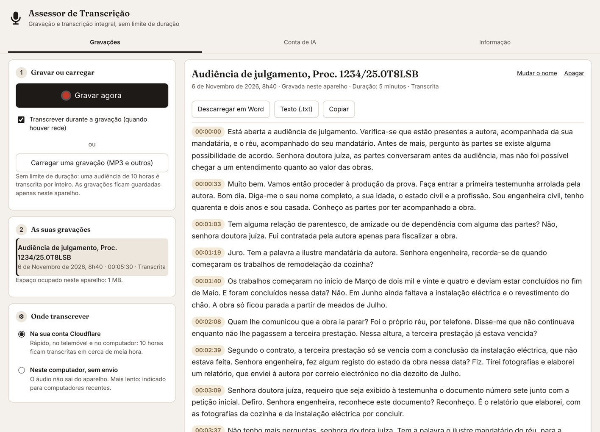

Grave e fique com o texto
Um botão para gravar, outro para terminar. A transcrição acompanha a gravação ou é feita no fim, e pode ser descarregada em Word. Serve, por exemplo, para:
- Audiências de julgamento e inquirições de testemunhas
- Reuniões com clientes e com a parte contrária
- Assembleias gerais, reuniões de câmara e de órgãos colegiais
- Aulas, conferências e formações
- Gravações de videoconferências e mensagens de voz em MP3

O que faz
Como adquirir e começar a utilizar
130 €
Licença individual, em pagamento único.
- Envie mensagem a Ana Marta Soares no LinkedIn. Após o pagamento, recebe o código de licença, que começa por COFRE-.
- Instale o Assessor seguindo os passos abaixo.
- Abra o Assessor de Transcrição, cole o código e seleccione Activar.
- Para transcrever na nuvem, ligue a sua conta Cloudflare gratuita seguindo os passos abaixo (cerca de cinco minutos, uma única vez). A gravação funciona desde logo.
Instalação em um minuto
O Assessor de Transcrição funciona no browser do telemóvel ou do computador e pode ser instalado como uma aplicação. As gravações e as transcrições ficam guardadas apenas no aparelho em que forem feitas.
Abrir o Assessor de Transcrição
- Abra o Assessor de Transcrição no Safari.
- Seleccione o botão Partilhar e depois Adicionar ao ecrã principal.
- Abra o ícone criado, cole o código de licença e seleccione Activar.
- Na primeira gravação, autorize o acesso ao microfone.
- Abra o Assessor de Transcrição no Chrome.
- No menu (os três pontos), seleccione Instalar aplicação ou Adicionar ao ecrã principal.
- Abra o ícone criado, cole o código de licença e seleccione Activar.
- Na primeira gravação, autorize o acesso ao microfone.
- Abra o Assessor de Transcrição no Google Chrome, no Microsoft Edge ou no Brave.
- Seleccione o ícone de instalação, no lado direito da barra de endereço, e confirme com Instalar.
- Cole o código de licença e seleccione Activar.
Ligar a conta de IA
O assistente usa o serviço de IA da Cloudflare. Ao ligar uma conta sua, gratuita, passa a dispor de uma quota diária só para si, sem qualquer custo e sem cartão de crédito. O procedimento demora cerca de cinco minutos e só se faz uma vez.
- Criar a conta. Abra dash.cloudflare.com/sign-up, indique o seu endereço de correio electrónico e uma palavra-passe e confirme a conta através da mensagem que recebe.
- Abrir o Workers AI. No painel da Cloudflare, no menu da esquerda, abra AI e depois Workers AI. Seleccione Use REST API.
- Copiar o identificador da conta. Em Get Account ID, copie o código Account ID.
- Criar o token. Seleccione Create a Workers AI API Token, depois Create API Token, e copie o token com Copy API Token. Guarde-o, porque a Cloudflare só o mostra uma vez.
- Ligar a conta no Assessor. No Assessor de Transcrição, abra o separador Conta de IA. Cole o Account ID no primeiro campo e o token no segundo e seleccione Guardar e testar. O Assessor confirma a ligação.
Redes de empresas e serviços públicos
O Assessor de Transcrição funciona em redes privadas e protegidas, desde que tenham acesso à internet para os endereços abaixo. Nas redes com filtragem de tráfego, o serviço de informática deve autorizá-los:
ana-marta-soares-direito-ia.github.io: aplicação e verificação da licençaassessor-ia.pages.dev: ligação ao serviço de transcrição
A gravação funciona sem rede; a transcrição na nuvem fica em espera e continua quando houver ligação. A transcrição no próprio computador não precisa de rede, depois de descarregado o modelo.
Em redes totalmente isoladas da internet, o assistente de IA não pode funcionar, porque depende do serviço da Cloudflare.
Perguntas frequentes
O que é o Assessor de Transcrição?
Uma aplicação para o telemóvel e o computador que grava audiências, reuniões e diligências e as transcreve na íntegra, em português, com a hora de cada parágrafo, sem limite de duração. Também transcreve ficheiros de áudio e de vídeo que já tenha.
Há limite de duração?
Não. As gravações e os ficheiros podem ter qualquer duração, por exemplo 10 horas. O áudio é dividido em partes de cerca de minuto e meio, cortadas nas pausas da fala, e todas são transcritas.
Quanto tempo demora a transcrição?
Na conta Cloudflare, cada parte é transcrita em poucos segundos: com a transcrição durante a gravação, o texto fica pronto pouco depois de terminar. Um ficheiro de 10 horas fica transcrito em cerca de meia hora, dentro da quota disponível. No próprio computador, depende do equipamento.
A gravação pode ser interrompida?
No telemóvel, a aplicação deve ficar aberta e o ecrã ligado. Se o sistema interromper o microfone, por exemplo numa chamada, o áudio gravado fica guardado e a gravação continua com «Continuar a gravar».
O áudio é enviado para algum servidor?
As gravações e as transcrições ficam guardadas apenas no aparelho. Na transcrição na nuvem, cada parte do áudio é enviada ao modelo Whisper da conta Cloudflare do próprio utilizador, sem retenção de dados. Na transcrição no computador, o áudio não sai do aparelho.
Os oradores são identificados?
Não. A transcrição apresenta o texto integral com a hora de cada parágrafo, que permite ouvir o trecho e conferir quem fala.
Porque é preciso uma conta Cloudflare?
A transcrição na nuvem corre na conta Cloudflare gratuita do próprio utilizador, com uma quota diária só sua, de cerca de três horas e meia de áudio, sem custos e sem cartão de crédito. Os passos estão nesta página, na secção «Ligar a conta de IA».
Quanto custa o Assessor de Transcrição?
A licença individual custa 130 €, em pagamento único, e é adquirida a Ana Marta Soares.